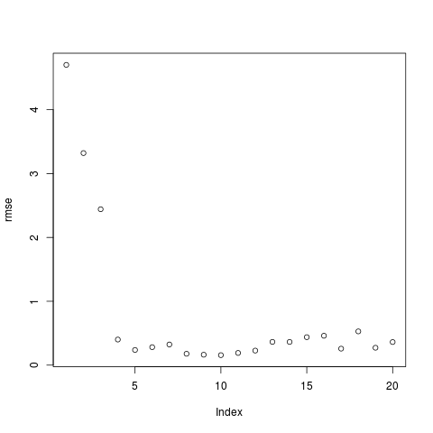

Perceptron multi-couches
Ce TP consiste à faire quelques expérimentations avec le perceptron multi-couches (PMC). On utilise la bibliothèque nnet de R.
Classification supervisée
La bibliothèque nnet permet de manipuler des perceptrons à une couche cachée en R pour réaliser des tâches de classification supervisée binaire. Pour pouvoir l'utiliser, on tape library (nnet).
Entraînement d'un PMC pour la classification supervisée
Pour entraîner un PMC, on a besoin d'un jeu d'exemples. On doit ensuite déterminer le nombre d'unités dans la couche cachée. Ensuite, on peut commencer à utiliser la fonction nnet qui entraîne un PMC. Cette fonction renvoie un PMC entraîné à l'aide des exemples.
Par exemple, pour apprendre à disciminer les iris Setosa des autres iris, on pourra taper :
> iris.nnet <- nnet (iris[,1:4], ifelse (iris[,5] == "setosa", 1, 0), size = 10)
ce qui signifie :
- on utilise les 4 attributs des iris pour décrire les données ;
- la classe est 1 pour les iris Setosa, 0 sinon
- on utilise 10 neurones dans la couche cachée
Une fois l'entraînement réalisé, iris.nnet contient le PMC qui a été entraîné.
L'entraînement s'arrête si l'un de ces 3 critères est rempli :
- avec le paramètre maxit = 150 (150 est juste une valeur donnée en exemple, on met ce que l'on veut), l'entraînement s'arrête au bout de 150 itérations, une itération étant ici définie comme l'utilisation de chacun des exemples pour la mise à jour des poids.
- avec le paramètre abstol = 1e-5 (1e-5 est juste une valeur donnée en exemple, on met ce que l'on veut), l'entraînement s'arrête quand l'erreur de prédiction sur l'ensemble des exemples d'entraînement est inférieure à ce seuil.
- avec le paramètre reltol = 1e-6 (1e-6 est juste une valeur donnée en exemple, on met ce que l'on veut), l'entraînement s'arrête quand l'erreur de prédiction sur l'ensemble des exemples d'entraînement entre deux itérations successives ne diminue pas d'un facteur supérieur à 1-la valeur indiquée.
Il existe d'autres paramètres à la fonction nnet, mais ceux mentionnés ici suffisent pour ce TP.
Prédiction à l'aide d'un PMC
Une fois l'entraînement réalisé, on peut utiliser le PMC entraîné pour rédire la classe de données. Par exemple, pour continuer avec l'exemple ci-dessus, on peut taper :
> predict (iris.nnet, iris[,1:4])
ce qui affiche la valeur prédite pour chacun des 150 exemples. Aux 50 premiers (qui sont de classe setosa) est associée une valeur proche de 1, alors qu'une valeur proche de 0 est prédite pour les 100 autres. Cela est conforme à la classe que nous avons spécifiée pour entraîner le PMC.
Notez bien que la manière dont nous venons d'utiliser la fonction nnet est incorrecte. En effet, il faut toujours découper l'ensemble d'exemples en un ensemble d'entraînement et un ensemble de test que l'on utilise séparément, le premier pour entraîner le PMC, le second pour estimer la probabilité qu'il a de prédire correctement la classe d'une donnée.
Nous avons fait ainsi car nous voulions seulement montrer comment s'utilisent les fonctions
nnet() et
predict(). Dans la suite du TP, il faudra procéder comme il se doit.
À faire
- Refaire la manipulation expliquée ci-dessus mais de manière correcte, i.e. en découpant l'ensemble d'exemples en un sous-ensemble d'entraînement contenant 80 % des exemples et un sous-ensemble de test contenant les autres exemples. Prenez garde à avoir la même proportion d'exemples de chacune des classes dans chaque sous-ensemble. Notez que les setosa sont les exemples numérotés de 1 à 50.
- Faites le même genre de manipulation pour chacune des deux autres classes, virginica et versicolor.
- Déterminez le nombre minimal d'unités à utiliser dans la couche cachée pour que les classes soient bien discriminées.
Régression
On s'intéresse maintenant à une tâche de régression, c'est-à-dire une tâche d'apprentissage supervisé dans laquelle l'étiquette est un nombre réel.
nnet() s'utilise exactement de la même manière que pour la classification supervisée sauf qu'il faut utiliser un neurone à fonction d'activation linéaire en sortie. Pour cela, on met linout = TRUE lors de l'appel à nnet().
Fonction en 1 dimension
On cherche à mieux comprendre comment un perceptron multi-couches apprend une fonction. Pour pouvoir illustrer graphiquement cet apprentissage, on s'intéresse à l'apprentissage d'une fonction à une seule variable.
Dans tout ce suit concernant une fonction à 1 dimension, on utilise les exemples suivants :
- 100 exemples d'entraînement sont disponibles en suivant ce lien.
- 100 exemples de test sont disponibles en suivant ce lien.
Variabilité des performances d'une architecture donnée
Tout d'abord, ayant choisi une architecture de réseau, on se demande si un apprentissage des poids donne toujours le même, ou à peu près le même, résultat.
- Entraîner un PMC ayant 5 neurones cachés pendant au maximum 1000 itérations avec les 30 premiers exemples.
- Mesurer la RMSE de ce réseau sur les exemples de tests.
- Répéter cela 10 fois. Stocker la RMSE de chacun des 10 réseaux.
- Observer ces 10 RMSE. Qu'en pensez-vous ?
Combien de neurones cachés ?
On va faire varier le nombre de neurones cachés pour voir l'effet que cela a sur la fonction qui est estimée et aussi pour déterminer un nombre de neurones cachés ayant les meilleures performances.
Pour cela, vous allez faire une boucle pour tester des PMC ayant de 1 à 20 neurones cachés. N'oubliez pas ce que vous avez constaté lors de l'exercice précédent. Pour chaque nombre de neurones cachés, vous faites un graphique avec tous les exemples et les valeurs prédites dans une autre couleur. Prenez le temps d'observer les changements et comment la fonction est, en général, de mieux en mieux approchée quand le nombre de neurones cachés augmente. Par exemple, j'ai obtenu les graphiques en utilisant 1, puis 2, puis 3, ... jusque 5 neurones cachés :
Stockez la plus petite RMSE obtenue pour chaque nombre de neurones cachés. Nommons
rmse le vecteur contenant toutes ces valeurs. Par exemple,
rmse [1] contiendra la RMSE du PMC ayant un neurone caché,
rmse [2] contiendra la RMSE du PMC ayant deux neurones cachés et ainsi de suite.
Conservez le PMC ayant la plus petite RMSE (quelle que soit sa taille).
À la fin, vous affichez le nombre de neurones cachés de ce meilleur PMC.
(Si
pmc est le résultat d'un appel à
nnet(), donc un PMC,
pmc$n fournit une liste contenant le nombre de neurones de chacune des 3 couches.)
Répétez tout cela plusieurs fois. Le meilleur PMC trouvé a-t-il toujours le même nombre de neurones cachés ?
Le meilleur PMC est-il vraiment celui-là ? Faites un
plot (rmse). Que constatez-vous ?
Vous obtenez un graphique qui ressemble à celui-ci :

Le meilleur réseau est celui qui est au niveau du coude.
Influence du bruit
Jusqu'à maintenant, nous avons travaillé sur un jeu de données non bruitées.
Quelle est l'influence de ce bruit sur le réseau de neurones. Refaites les mêmes manipulations en utilisant ces fichiers de exemples à la place :
Fonction en 2 dimensions
Refaites rapidement le même genre d'étude sur un jeu de données correspondant à une fonction bidimensionnelle.
Les données sont disponibles en suivant ce lien.
- Combien de neurones cachés donnent le meilleur résultat ?
- On peut aussi ajouter des connexions directes entre les entrées du réseau et la sortie ; à ces connexions sont également associés des poids. Pour ajouter ces connexions, il faut spécifier l'argument skip=T lors de l'appel à nnet(). Déterminez le nombre de neurones cachés qui donne les meilleurs résultats avec ces connexions directes en plus.